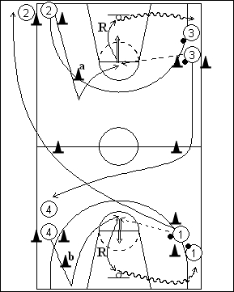

Catégorie : SHOOTS (Sh-003)
Déroulement
- Quatre files. Les ballons se trouvent dans les files 1 et 3.
- Le premier joueur de la file 4 se démarque vers la baseline (derrière le cône b) et remonte vers la ligne des lancers-francs. Il reçoit la passe du premier joueur de la file 1 et effectue un jump shoot. A l’opposé, le premier joueur de la file 2 se démarque vers le centre du terrain (derrière le cône a) et revient également vers la ligne des lancers-francs. Il reçoit la passe du premier joueur de la file 3 et réalise le jump shoot.
- Chaque shooteur effectue son rebond. 4 va en dribble dans la file 1. 2 va en dribble dans la file 3. 3 traverse le terrain comme indiqué et va dans la file 4. Idem pour 1 qui va en 2.
Coaching points
- Insister sur la qualité des démarquages et des shoots après réception correcte.
- On peut déplacer les files 3 et 1 sous les panneaux et demander aux joueurs de ces files de jouer en défense sur les shoots (closing out) avant de rejoindre leur nouvelle file.